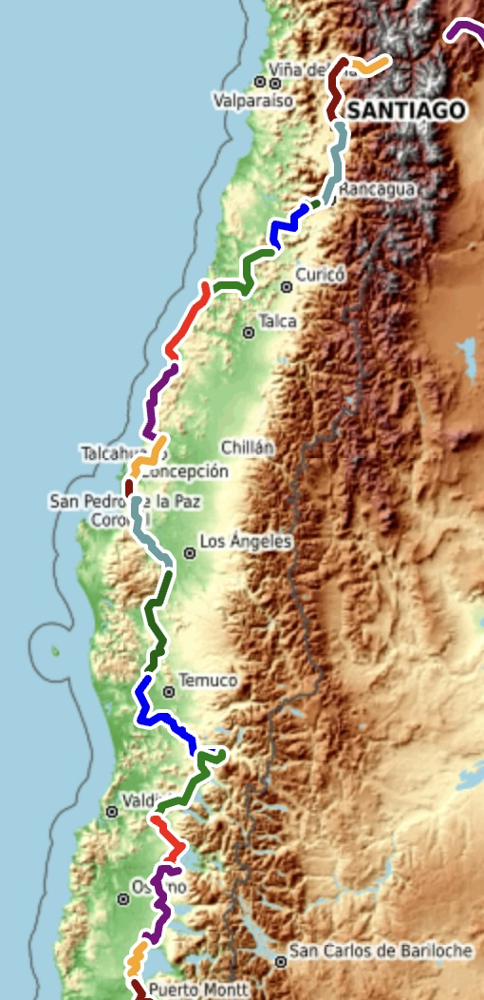
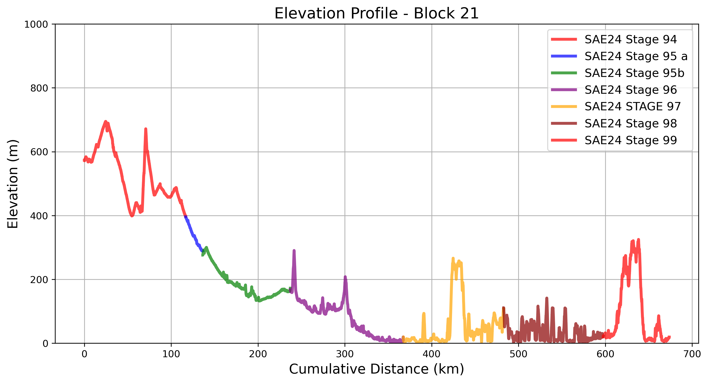
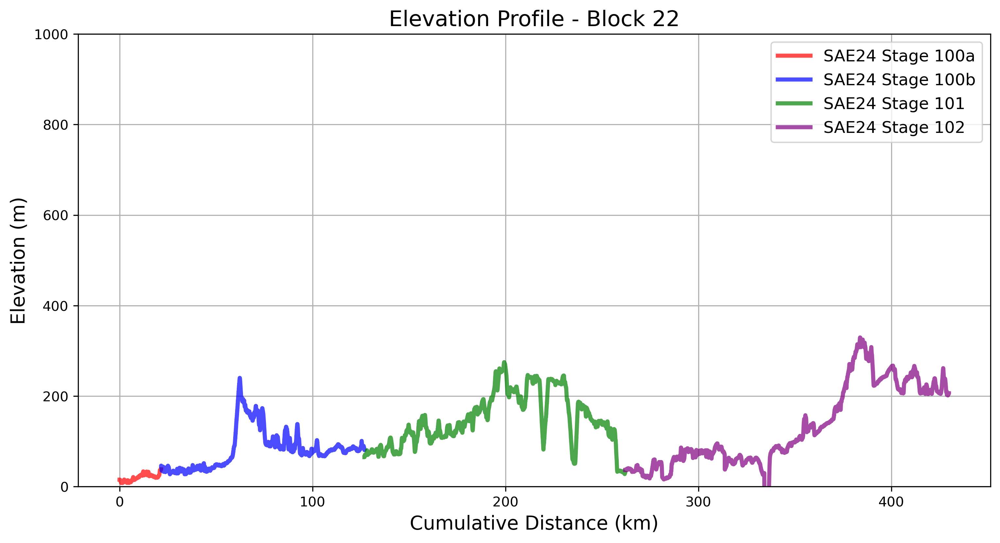
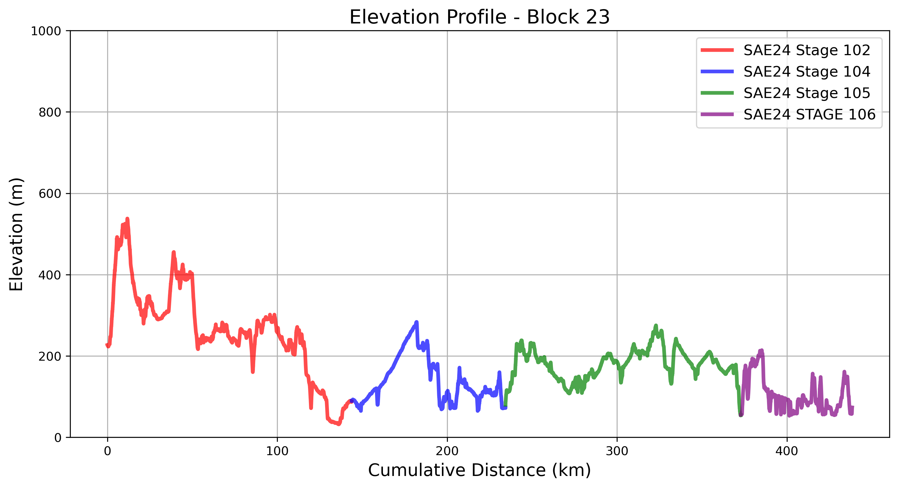

Chile#
Cycling Through Coastal Ranges and Volcanic Lakes#
Chile’s segment of the South American Epic is a journey through diverse landscapes, from Santiago’s central valley to the lush lake district of the south. Riders follow rolling coastal ranges, volcanic foothills, and scenic lake routes, eventually entering Patagonia’s rugged wilderness.

Each block below highlights key geographic features, along with an interactive map of the actual routes ridden.
Block 21: Santiago to Concepción#
Leaving the bustling capital, the route moves through vineyards, rolling hills, and forested coastal mountains. The ride features mild terrain with a mix of farmland and small towns, gradually approaching the coast.

Block 21: Santiago to Concepción#
Dates: 2024-10-31 – 2024-11-05 | Riding days: 6 | Rest days: 0 Total distance: 673 km | Total elevation gain: 5424 m
Date |
Stage |
Depart |
Arrive |
Dist (km) |
Up (m) |
Surface |
|---|---|---|---|---|---|---|
Thu Oct 31 |
94 |
Santiago |
Lo Miranda |
119 |
635 |
paved |
Fri Nov 01 |
95 |
Lo Miranda |
Santa Cruz Vineyard |
114 |
365 |
paved |
Sat Nov 02 |
96 |
Santa Cruz Vineyard |
La Pesca |
130 |
729 |
paved |
Sun Nov 03 |
97 |
La Pesca |
Chanco |
114 |
1084 |
paved |
Mon Nov 04 |
98 |
Chanco |
Treguaco |
118 |
1560 |
64 pave / 54 dirt |
Tue Nov 05 |
99 |
Treguaco |
Concepcion |
78 |
1051 |
69 pave / 9 dirt |
Santiago was a great city for 2 rest days. Note that in contrast to much of South America pedestrians feel super safe walking into the street without looking, once the signals indicate. Cyclists looking to beat a light are likely to at least get some angry looks. We stayed across the street from an Arts Center and near the campus of Pontificia Universidad Católica de Chile. Lots to see including Botero’s Caballo in Parque Forestal and busy local Mercados.
Stage 94 to Lo Miranda South through the central valley Vineyards
Stage 95 to Santa Cruz Vineyard. I missed a turn early on, spent about 40km on the wrong side of the Rio Cacahpoal from the rest of the group. But eventually found my way back to the group to see a number of rustic Water wheels and make it to a - Wine Tasting.
Finally a view of the Pacific Ocean.
Stage 99 to Concepcion. Crazy finish to the day along an abandoned coastal rail not yet a functional bikeway, lots of hike a bike and a surprisingly dark tunnel.
Block 22: Concepción to Pucón#
This block marks the transition into Chile’s Lake District, where volcanoes, alpine lakes, and dense forests dominate the scenery. The terrain becomes more undulating, with some steep climbs leading to breathtaking views.

9️⃣ A Chilean Sea Feast by Our Cycle Tour Chef Mark#

{kind=link}
{kind=link}
{kind=link}
{kind=link}
{kind=link}
{kind=link}
{kind=link}
{kind=link}
Block 23: Pucón to Puerto Varas#
Riding deeper into southern Chile, the expedition follows a spectacular route through the Andes foothills, passing snow-capped volcanoes, crystal-clear rivers, and vibrant green forests. The cycling here is demanding but visually rewarding.

Closing Thoughts#
Chile’s landscapes transition from agricultural valleys to the awe-inspiring beauty of the Lake District. The journey through Chile’s southern regions is both scenic and challenging, setting the stage for the final, breathtaking miles into Patagonia.
With Chile behind, the expedition moves into Patagonia, where the landscapes become wilder and more remote, leading to the ultimate southernmost cycling adventure. 🚴♂️